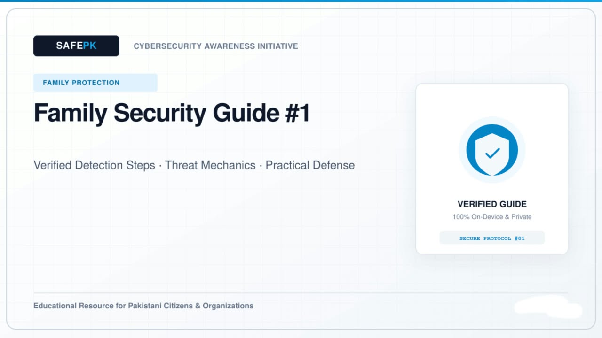
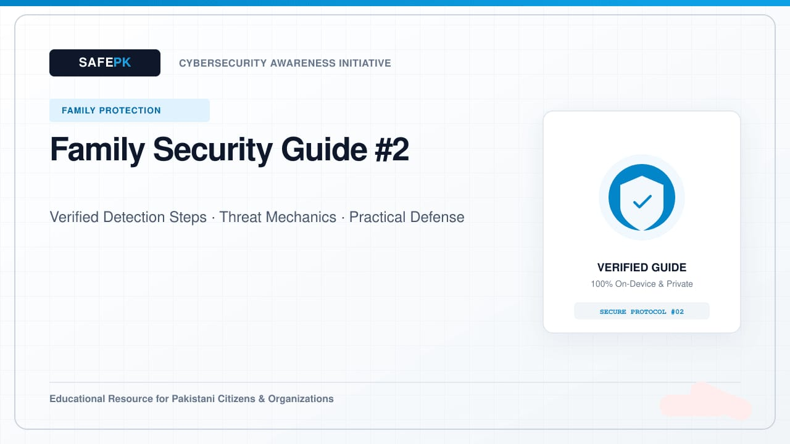

Child Online Safety: Setting Up Google Family Link and Apple Family Sharing
How to establish age-appropriate digital boundaries, screen time schedules, and safe web filters while maintaining open family trust.
Simple cybersecurity guidance to help keep your family safer online.

How to establish age-appropriate digital boundaries, screen time schedules, and safe web filters while maintaining open family trust.

Equipping senior family members with easy, reassuring habits to spot urgent phone requests and verify financial calls calmly.

Safe setup of shared living room iPads, family laptops, and Android tablets used by multiple family members across generations.

Helpful tips for managing in-game purchases, avoiding unofficial reward links, and configuring safe chat settings in popular games.

How a simple, shared family code word helps relatives immediately verify urgent phone calls and avoid false emergency requests.

Turn your home internet router into a reliable foundation that protects every family smartphone, laptop, and smart TV.

A supportive, collaborative guide to helping teenagers review their privacy settings, manage followers, and share thoughtfully.

Practical habits to protect household privacy during online school classes, video calls, and screen sharing sessions.

Organizing essential household accounts, cloud photo libraries, and emergency recovery contacts so trusted family members are always prepared.

How to review privacy settings and use strong password habits for school portals, homework apps, and online learning platforms.

How to follow the simple 3-2-1 backup method so decades of family photographs and home videos stay safe even if a phone or laptop breaks.

How parents can recognize staged emergency phone calls claiming a relative is in trouble, and how to verify their safety immediately.

Simple steps to secure smart TVs, indoor Wi-Fi cameras, and voice assistants with strong passwords and network separation.

Engaging family habits to help young people evaluate altered images, AI-generated videos, and sensational online rumors.

Why waiting until you return home to post vacation photos keeps your household safer, and how to turn off automatic camera location tags.

A helpful pre-gifting checklist for updating software, configuring parental controls, and securing new tablets or game consoles for kids.

How parents can listen supportively, save helpful records, use platform blocking tools, and work with schools when kids face unkind behavior online.

How to properly back up and factory-reset older family smartphones, tablets, and laptops before selling, trading in, or passing them on.

Helping teenagers understand mobile wallets, in-app spending, and why they should never let strangers use their bank or wallet accounts.

A practical, easy-to-follow household checklist so every family member knows who to call if a phone is lost or an account needs recovery.